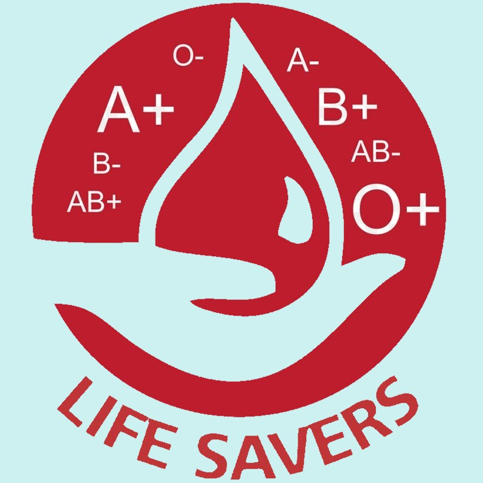

Your one donation can save up to 3 lives. Be a hero in someone's life.
The Blood Donation System is a web-based platform designed to connect blood donors with recipients in need. It helps users register as donors, search for available donors, and request blood easily.
Our goal is to save lives by making blood donation faster, easier, and more accessible. We bridge the gap between those who want to help and those in urgent need.

Blood cannot be manufactured; it can only come from generous donors.
Every 2 seconds someone needs blood for surgeries or emergencies.
One single donation can save up to 3 lives in your community.
Helps in emergency treatments and long-term medical procedures.
12 Units
08 Units
05 Units
03 Units
15 Units
02 Units
Sign up as a donor by providing your health details.
Recipients can search or request specific blood groups.
Admin verifies donor availability and health status.
The donation process is completed safely.
Total Donors
Units Available
Lives Saved
Your small act of kindness can make a world of difference.
Become a Donor+91 7730942479
chittalikhita@gmail.com.com
Kommadhi Junction Road